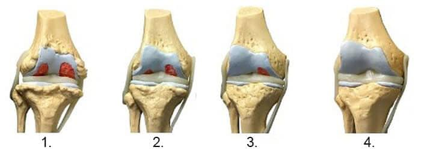
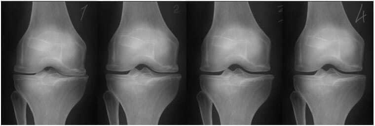
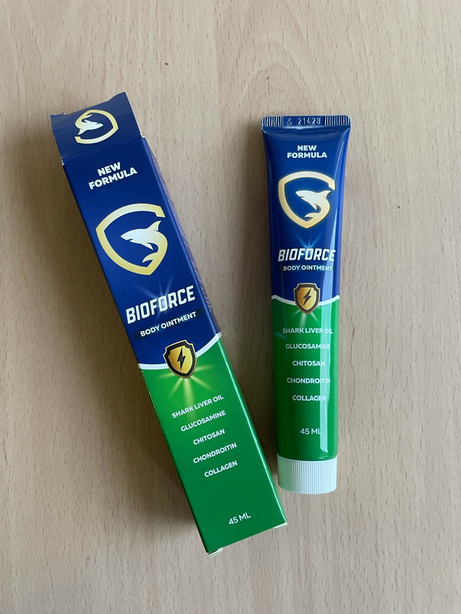

72-годишна българка ни разказа как най-накрая се е отървала от болките в ставите и пробяга маратон на 42 км.
Лекарите все още не знаят как да лекуват увредените стави, а в аптеките се продават красиво опаковани лекарства. Те напразно обещават ефективност, а в действителност просто искат да получат колкото се може повече пари от хората с увреждания.
На 72, Лилияна притежава издръжливостта, енергията и здравето, на които жените и мъжете на 40 години биха завидели, но това не винаги е било така.
Цял живот е живяла във Варна. След 40 години тя започва да страда от болки в ставите. На 42 вече има остеохондроза, ишиас и артрит. И на 68 години тя стана инвалид, диагностицирана е с артроза на тазобедрената става. Ставите й бяха почти напълно износени, едва се движеше и ходи само с бастун. Година по-късно тя трябваше да се качи в инвалидна количка.
Пенсията й никога не стигала, за да купува скъпи лекарства. Предвид напредналата си възраст, тя решава да се погрижи за ставите и болките в гърба. В резултат на това две години по-късно, Лилияна преодоля увреждането си.
На 70-годишна възраст лекарят я прегледа и беше шокиран: „Ако утре участваш в лека атлетика или бягане, определено ще спечелиш“.
Как Лилияна възстанови напълно болните си стави и как успя да спечели почетния международен трофей и възхищението на българите на тази възраст?
Лилияна споделя своята тайна с нашите читатели
Репортер: Лилияна, първи въпрос. Как да поддържаме енергичност, здраве, ентусиазъм и дори да печелим трофеи на тази възраст? Каква е вашата тайна?
- Честно казано, не винаги съм била такава. Работих през целия си живот във фабрика, опъвайки гърба си осем часа на ден в продължение на 25 години. На 42 години бях толкова натегната, че ме лекуваха в болницата две седмици и ми поставиха диагноза остеохондроза 4 стадий. По това време вече имах артрит, периодично ме болеше тазобедрената става. Само след година трябваше да ходя с бастун, а след няколко месеца наистина трябваше да се движа в инвалидна количка.
Лекарят ми предписа много лекарства. Сега дори не помня имената им, имаше много. Хапчетата действаха, но не за дълго. Ако забравях да изпия едно хапче, след няколко часа болката се връщаше и припадах. Мога да кажа, че нищо не се е променило в ставите ми през десетилетията. Лекарите все още не знаят как да лекуват увредените стави, а в аптеките се продават красиво опаковани лекарства с празни обещания за тяхната ефективност. Но в действителност просто искат да получат колкото се може повече пари от хората с увреждания.
По това време вече не можех да работя. Трябваше да седя или да лежа. Пиех по шепа хапчета на ден и давах на аптеките всички пари, които бях спестила почти за 25 години.
20 години неработоспособност
Инвалид съм от 20 години. Представете си само през какви мъки преминах! И през тези 20 години нито един лекар не можеше да ми помогне. Когато навърших 70, разбрах, че все още ми остават три, четири, може би пет години живот. Чувствам се зле. Ако се събудя добре, без болка, няма да се изненадам да науча, че всъщност съм се събудила на небето.
Може би тогава щях да умра, ако не беше моята прекрасна племенница. Съпругът й работи в Научния център по ревматология във Варна. Той ми каза, че ако искам да възстановя увредените стави, първо трябва да нормализирам баланса на синовиалната течност и за това трябва да изчистя лимфата. И ако успея да изчистя лимфата си, ще продължа да живея. Той ми обясни това с прост пример.
Какво се случва с колата, ако не смените маслото, което смазва частите му? Разбира се! То се износва. Частите ще се счупят и вече няма да можете да използвате колата.
Същото е и с лимфната течност. Той доставя хранителни вещества на всички органи. А остатъци и токсини, които се натрупват в лимфната система с годините, тровят тялото. На първо място са засегнати ставите и гръбначния стълб, тъй като хрущялът е податлив на замърсяване в лимфата.
Замърсената лимфна течност причинява не само ставни заболявания, но и повече от 87% от заболяванията, които се появяват на възраст 50, 60 и 70 години.
Той дава ясни инструкции:
- Пречистете лимфната течност
- Възстановете синовиалния баланс
- Възстановете чисти и функциониращи стави с колаген и хондроитин
Само 3 стъпки
След като получих този съвет от съпруга на моята племенница, бях много изненадана. ОТ 20 ГОДИНИ НИКОЙ ДОКТОР НЕ МИ КАЗА ТОВА!
Веднага последвах съвета, който получих. Знаете ли какво се случи след това? Шест месеца по-късно се отървах от инвалидната количка и година по-късно бях напълно здрава! Освен това той ми препоръча да се занимавам със спорт. На 70 започнах да бягам, а на 72 тази година пробягах най-големия международен 40 км маратон и спечелих трофея.
Доскоро бях в инвалидна количка и се подготвях за смъртта и само за две години мога да тичам и да спечеля трофей под възхитените очи на стотици хора. Не е ли чудо?
Репортер: Вашата история е истинско чудо! Наистина ви се възхищаваме. Вие сте много силен човек. Но защо мислите, че лекарите говорят толкова малко за здравето на ставите и удължаването на живота? Каква е тази конспирация?
- Кажете ми, на кого са нужни възрастни хора? Възрастните хора са бреме за всички. Не е изгодно да ги лекуваме и да им удължаваме живота, защото колкото по-дълго живеем, толкова повече трябва да ни плащат. Пенсиите са разруха за всяка икономика, така че никой не мисли за удължаване на живота ни.
Освен това днес лечението на заболявания (особено на опорно-двигателния апарат) е бизнес за няколко милиарда долари. Помислете колко пари харчите за хапчета и лекари. Тогава помислете колко такива пациенти има — и всички те плащат за хапчетата и за лекарите. Следователно за фармацевтите не е изгодно да поддържат здравето на хората. Много по-полезно е да им давате неефективни лекарства, които само временно помагат.
Само ние искаме да живеем по-дълго, никой вече не иска това, така че трябва да разчитаме на себе си, за да се излекуваме. Приемането на хапчетата, предписани от Вашия лекар, определено не е решение. Ако искате да живеете по-дълго и да се наслаждавате на живота, има само един начин.
Репортер: Можете ли да ни кажете как точно възстановихте ставите си?
Всъщност сега е по-лесно от всякога. Преди това беше необходимо да се събират или поръчват специални растения, да се приготвят лекарства от тях и да се пречиства лимфата в продължение на няколко месеца (първото пречистване продължи около шест месеца!). След това трябваше да бъдат поръчани други специални растения за възстановяване на синовиалния баланс. И едва тогава можете да започнете да приемате колаген и хондроитин. Този процес обикновено отнема повече от една година.
Вече обаче всичко това е по избор и процедурата по възстановяване вече включва всички тези стъпки. След два месеца ще бъдете като нови!
Има един много добър крем, който вече съчетава всички елементи за пълно възстановяване и се казва . Съдържа микроелементи и за трите етапа на възстановяване – прочистване на лимфата, синовиален баланс и усвояване на колаген и хондроитин. Съдържа и глюкозамин. Но най-важното е, че тези три етапа протичат паралелно и продължават не повече от два-три месеца, просто трябва да използвате този крем 2-3 пъти на ден и това е всичко.
Препоръчвам на всеки да преминава през тези три етапа на всеки две до три години. Ще живеете 80-100 години, може би дори 120, ако го направите. В същото време няма да усещате болки в ставите, ще бъдете активни и щастливи. Повярвайте ми, това е много по-добре, отколкото да се чувствате като старец, доживяващ последните си години!
Методът, за който ни разказа маратонецът жена, изглежда работи и е много ефективен. Наистина ли е вярно? Преди да публикуваме материала и да го предоставим на читателите, решихме да се консултираме с известния български учен, главен специалист на Европейския център за биотехнологично развитие д-р Иван Костадинов.
Репортер: Д-р Костадинов, смятате ли, че един такъв тристепенен метод наистина може да възстанови ставите?
- Да точно. Чистата лимфа е от съществено значение за здравето. А възстановяването на синовиалната течност осигурява адекватна защита срещу преждевременно разрушаване на ставния диск. Разбира се, г-жата Лилияна описва всички процеси, протичащи в тялото с прости думи, но като цяло тя обясни много добре.
В днешно време все повече лекари смятат, че възстановяването на баланса трябва да бъде задължително за всички хора над 40 години. И ако работата на човек е свързана с физическа активност, тези процедури трябва да се правят по-рано. След като извършите тази процедура веднъж след 30 години, имате гарантирана защита срещу ставни заболявания за още 10 години.
Репортер: Бихте ли ни разказали повече за крема ? Какво е това средство?

е крем, произведен в България. В момента се счита за най-ефективното средство за лечение и рехабилитация на ставите.
съдържа две основни активни съставки: масло от черен дроб на акула за прочистване на лимфата и хитозан за възстановяване на баланса на синовиалната течност. Кремът също така съдържа високи нива на колаген, глюкозамин и хондроитин, които са важни за възстановяването и укрепването.
Благодарение на своята научна формула, е ефективен при лечението на различни ставни заболявания:
- артрит
- остеоартрит
- остеоартрит на тазобедрената става
- остеоартрит
- спондилоза
- остеохондрит
- остеопороза
- гонартроза
стартира естествения процес на регенерация, хрущялната тъкан получава нови клетки и започва да се обновява, поддържайки процеса на регенерация в продължение на няколко години.
Проучих този продукт в Европейския център за развитие на биотехнологиите. Бих искал да представя резултатите от това проучване. В проучването са участвали 270 доброволци.
- Лимфата е напълно изчистена от токсини и други примеси - 96% от участниците в изследването
- Синовиалната течност отново е достигнала количеството, необходимо за правилното функциониране на опорно-двигателния апарат - 98% от участниците в изследването
- Ставата се върна в първоначалната си форма - 94% от участниците в проучването
- Динамиката на растеж на хрущялната тъкан се увеличава - 74% от участниците в проучването
- Повишена ефективност на лечението на хронични заболявания - 99% от участниците в проучването

1. Липса на хранене на ставите. Хрущялната тъкан се разрушава.
2. Регенерация на хрущялната тъкан на ставата след 2 седмици приложение на “”.
3. Регенерация на хрущялната тъкан на ставата след 3 седмици приложение на “”.
4. Здрава става след края на курса на лечение с "".
- Рентгенографията по-долу показва типична картина на регенерация на колянната става.

- Благодарение на "" можете да излекувате болестите си у дома за месец-два. "" не замръзва, не облекчава болката, а "рестартира" тялото на клетъчно ниво. Премахва причината за самата болка и връща ставите в първоначалното им нормално състояние.
Освен масло от черен дроб на акула и хитозан, съдържа и 50 полезни макро- и микроелементи за ставите и гръбначния стълб. Няма да споменавам всички, но мога да кажа, че са комплексни и насочени към подобряване на възстановяването на цялата опорно-двигателна система.
Важно! Учените са стигнали до заключението, че есента е най-доброто време за започване на лечение на ставни заболявания. Чрез понижаване на средната температура се ускорява метаболизмът, засилва се кръвообращението, увеличава се притока на кръв и кислород към вътрешните органи и се подобрява ефектът от използването на крема. Лечението е с 67% по-ефективно, отколкото през друго време на годината.
Репортер: Откъде можем да закупим и колко струва?
За да се привлече вниманието на хората към продукта от до ще стартира програма, като продуктът може да бъде поръчан с отстъпка. Мисля, че ефектът ще е много силен и всеки, който постига отлични резултати след употреба на продукта, ще го препоръча и на приятели.
ВНИМАНИЕ! Пазете се от фалшификати!
23 бр.
Коментари
Даниел Денчев
Прочетох статията. Имам абсолютно същия проблем. Нито един лекар също не ми каза за този метод на лечение. Хубаво е, че не е нужно сами да събирате растения и да отделяте време за това. Всички съставки вече са събрани в препарата . Поръчах го, определено ще го пробвам!
Д-р Костадинов
Даниел, никой лекар няма да ви каже за този продукт. За съжаление лекарите и фармацевтичните компании са в тесен контакт, просто не им е изгодно.
Димитър Апостолов
Аз също поръчах. Чувал съм за преди. Много хора го хвалят, но аз не знаех от къде да го купя. Сега знам и дори с отстъпка!
Ралица
Благодаря!

Галина Беновска
Лекарството е отлично! Нямам големи проблеми и не съм в инвалидна количка, но гърбът ме боли от над 10 години. И никой лекар не ми помага! И аз пих много хапчета, но всички бяха безполезни! Купих и след две седмици болката изчезна! Това е щастие! Благодаря отново за това откритие!
Д-р Костадинов
Галина, повечето хора са сигурни, че болките в гърба не са сериозен проблем. От друга страна, болката е предупреждение за нарушения на опорно-двигателния апарат. За да не се влоши ситуацията, се препоръчва лечението да започне на ранен етап.
Галина Беновска
Д-р Костадинов, напълно съм съгласен с Вас. За съжаление, ритъмът на живот кара хората да пренебрегват този факт, като си спомнят за болестите само в по-късните етапи.

Станимир Славов
Ползвам го 2 месеца. Болката в коляното е изчезнала. Започнах да се чувствам много по-добре, дори започнах да тичам сутрин. Поръчах още два резервни пакета. Препоръчвам на всички!

Венелина Борисова
И аз се боря с болки в коляното, трябва да поръчам!
Александър Стоилов
Моят съсед ми каза за лекар, който хвали тази добавка. Той посъветва да закупя този продукт възможно най-скоро, докато има намаления.
Д-р Костадинов
Радвам се да чуя, че има лекари, които дават приоритет на възстановяването на пациента, а не на ползата от ненужното лечение!
Христина Бъчварова
Съставът на е много впечатляващ! Продукта е ефективен и много евтин!
Ани Генчева
Жалко е, че такъв добър продукт може да не се появи скоро. Какво мислят лекарите?
Лилияна
Този продукт ще се продава онлайн. Но представител на фирмата ме предупреди, че цената ще се повиши в бъдеще, тъй като разходите за транспортиране на една от съставките ще се повишат.
Д-р Костадинов
Ани, лекари и фармацевтични компании са в близък контакт, това е всичко.
Йоанна Красимирова
Бяга 42 км на 72 години ??? Аз съм само на 40 години и едва успявам да пробягам километър! Ще го поръчам веднага!
Севдалина Христова
Йоанна, аз също бях вдъхновена от тази история! За съжаление, дори младите хора сега правят по-малко упражнения от Лилияна. Мисля, че проблемът е, че обръщат твърде малко внимание на ставите.
Лилияна
Йоанна, никога не е късно да започнете правилен и активен живот! Здравите стави могат да ви помогнат за това!

Айше Ахмедова
Костите и ставите са гръбнакът на нашето тяло, както и на съдовата система. Ако се грижите за тях и навреме осигурите превантивно лечение, можете да живеете 100-120 години. Благодаря за вашето откритие!
Лилияна
Айше, прекрасно е, че има рационални хора! Казахте го много правилно!
Венка Атанасова
Интересно ми е какво е това средство. Трябва да го пробвам!

Емилия Йорданова
Правя превантивно лечение с този метод повече от 15 години и изглежда, че този крем е на същите принципи. Мога да кажа, че работи.

Борислава Стоянова
Благодаря! Вече поръчах!
Стоянка Велева
Използвам този крем само пет дни и днес се събудих без болки в ставите. Наистина се надявам, че това ще ми помогне напълно да възстановя ставите си! Благодаря!
Лилияна
Здравейте Стоянка, радвам се, че последвахте съвета ми. Желая ти много здраве!